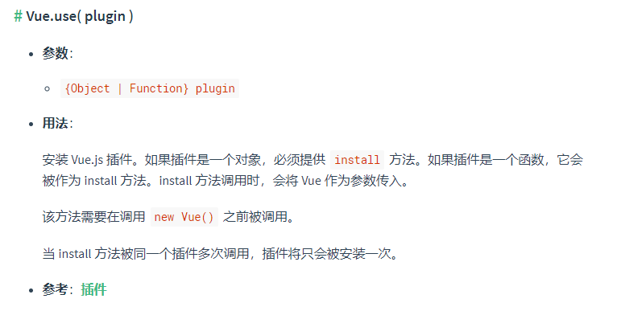

前言
在vue中引入第三方库通常我们都会采用import的形式引入进来，但是有的组件在引入之后又做了Vue.use()操作，有的组件引入进来又进行了vue.prototype.$axios = axios类似的操作，那么它们之间有什么联系呢？
1
2
3
4
5
6
7
8
9
10
11
12
13
14
15
16
17
18
19
20
21
22
23
24
25
26
27
28
29
|
import ElementUI from 'element-ui';
Vue.use(ElementUI);
import axios from 'axios';
axios
.post('/user', {
firstName: 'Fred',
lastName: 'Flintstone',
})
.then(function (response) {
console.log(response);
})
.catch(function (error) {
console.log(error);
});
import Pagination from '@/components/Pagination';
Vue.component('Pagination', Pagination);
import { download } from '@/utils/index';
Vue.prototype.$download = download;
|
Vue.use是什么

emmmm，似乎不太好理解？我们来看看源码，Vue.use()后做了哪些事儿。
1
2
3
4
5
6
7
8
9
10
11
12
13
14
15
16
17
18
19
20
21
| Vue.use = function (plugin) {
const installedPlugins =
this._installedPlugins || (this._installedPlugins = []);
if (installedPlugins.indexOf(plugin) > -1) {
return this;
}
const args = toArray(arguments, 1);
args.unshift(this);
if (isFunction(plugin.install)) {
plugin.install.apply(plugin, args);
} else if (isFunction(plugin)) {
plugin.apply(null, args);
}
installedPlugins.push(plugin);
return this;
};
|
看起来精髓在插件的install方法，那我们来看看执行插件的install后发生了什么？
install 后发生了什么
以vue-router为例，来看看
1
2
3
4
5
6
7
8
9
10
11
12
13
14
15
16
17
18
19
20
21
22
23
24
25
26
27
28
29
30
31
32
33
34
35
| install (app) {
const router = this;
app.component("RouterLink", RouterLink);
app.component("RouterView", RouterView);
app.config.globalProperties.$router = router;
Object.defineProperty(app.config.globalProperties, "$route", {
enumerable: true,
get: () => unref(currentRoute),
});
const reactiveRoute = {};
for (const key in START_LOCATION_NORMALIZED) {
reactiveRoute[key] = computed(() => currentRoute.value[key]);
}
app.provide(routerKey, router);
app.provide(routeLocationKey, reactive(reactiveRoute));
app.provide(routerViewLocationKey, currentRoute);
const unmountApp = app.unmount;
installedApps.add(app);
app.unmount = function () {
installedApps.delete(app);
if (installedApps.size < 1) {
pendingLocation = START_LOCATION_NORMALIZED;
removeHistoryListener && removeHistoryListener();
removeHistoryListener = null;
currentRoute.value = START_LOCATION_NORMALIZED;
started = false;
ready = false;
}
unmountApp();
};
};
|
FAQ
为什么axios不需要vue.use(axios)，可以开箱即用？
理由也很简单，跟上面需要install的相反。因为axios是基于Promise封装的库，是完全独立于Vue的，根本不需要挂载在Vue上也能实现发送请求。
为什么说“当 install 方法被同一个插件多次调用，插件将只会被安装一次”
从use源码中，我们可以发现使用了全局的数组_installedPlugins来存储已经安装过的插件，已经安装过直接返回当前实例。
参考资料：
vue3源码分析之use(store)
JS每日一题: Vue.use中都发生了什么？
Vue Router 源码学习